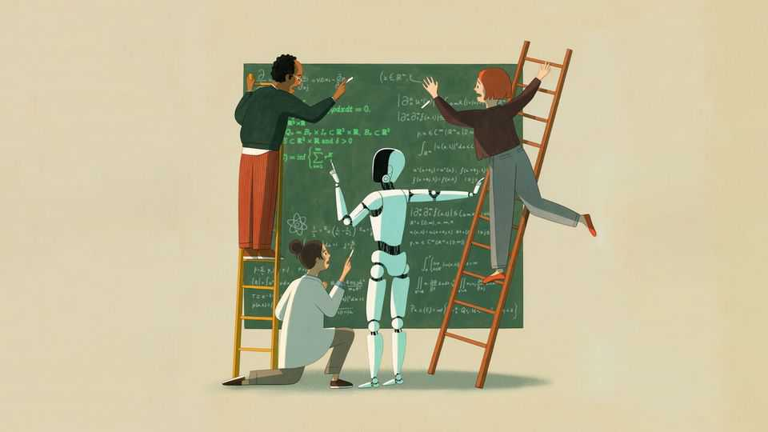

OpenAI’s approach to mathematics does not add up
Two months after the firm’s initial advances, its lack of transparency is still causing problems

Nov 5th 2026
On October 29th leading mathematicians gathered at the Royal Society in London to discuss the future of their field. There was plenty of excitement at the progress artificial intelligence is making, leavened with nostalgia for the good old days of early 2026 when human-led mathematics was the only game in town.
Many attendees were also critical of how AI labs have been handling their models’ breakthroughs. In recent months labs have flooded the field with papers that are almost impenetrable to human minds, and kept the details of new results under wraps. Such secrecy, say mathematicians, increases the chance of needless errors and risks creating an illusion of progress. They do not feel the labs are keeping their promises to be more transparent.
Take the announcement by OpenAI, an American lab, on October 26th, of solutions to three more long-standing problems. The first is a proof of the Kakeya conjecture, related to how to rotate an infinitely thin needle while sweeping out as little area as possible. Thus far the conjecture had been found to hold in up to three dimensions. OpenAI said its proof extends it to any number.
The second is a disproof of the Exponential Time Hypothesis (ETH), which sets an upper limit on how fast any algorithm can solve a specific problem. The hypothesis had long been assumed to be true, with implications for disciplines ranging from computational biology to database management. A proof that it is false “re-opens questions” about how quickly such tasks could be performed, said OpenAI. For both ETH and the Kakeya conjecture, the lab released the AI’s output so experts can begin working out what these results mean.
When it came to the third of the results, however, a cloak of secrecy descended. It is related to the Yang-Mills existence and mass-gap problem, one of seven landmark riddles known as the Millennium Prize problems. It asks whether a mathematical framework called Yang-Mills theory, which underpins physicists’ understanding of the universe, stands on firm mathematical footing (or, in mathematical jargon, “exists”). For many physicists, the question is of little relevance—the theory already makes predictions that match real-world data, so its truth is assumed. Mathematicians, though, are more pernickety.
OpenAI says its model has proved that Yang-Mills theory exists. But the firm has said little else. Instead, it has chosen to keep the AI’s 1,147-page proof under wraps while a “shepherding committee” of five physicists decides what to do with it. The committee has said that before they release it they “would like to be convinced that it is correct”. Until then, and until those outside the committee are similarly satisfied, there are question marks about how seriously to take their claim.
These worries are not theoretical. Ever since OpenAI released a solution to the Navier-Stokes problem—another of the Millennium Prize problems—on September 8th, mathematicians have been trying to follow its working. They know the proof is worth understanding because it was accompanied by a certificate of logical watertightness known as a Lean formalisation. If a proof translated into Lean code runs without errors, it verifies that the proof contains no inconsistencies.
In a study published online on October 6th, a team led by Anders Hansen, of the University of Cambridge, showed that the proof’s Lean verification does not, in fact, correspond to what is written in the paper. The problem is unlikely to be fatal. Dr Hansen reckons that the Lean code accurately reflects a solution to the Navier-Stokes problem, but that its contents differ from those of the accompanying paper. OpenAI, for its part, says it is possible its models came up with two distinct proofs.
Anyone who has spent time navigating a foreign country will know that dodgy translations can cause misunderstandings. The same is true for mathematics. If AI labs do not check that a proof’s Lean code matches the ideas behind it, they risk creating unnecessary confusion. As Kevin Buzzard, a Lean whiz at Imperial College London, put it during his presentation at the Royal Society, the AI labs are doing only one part of the job. ■